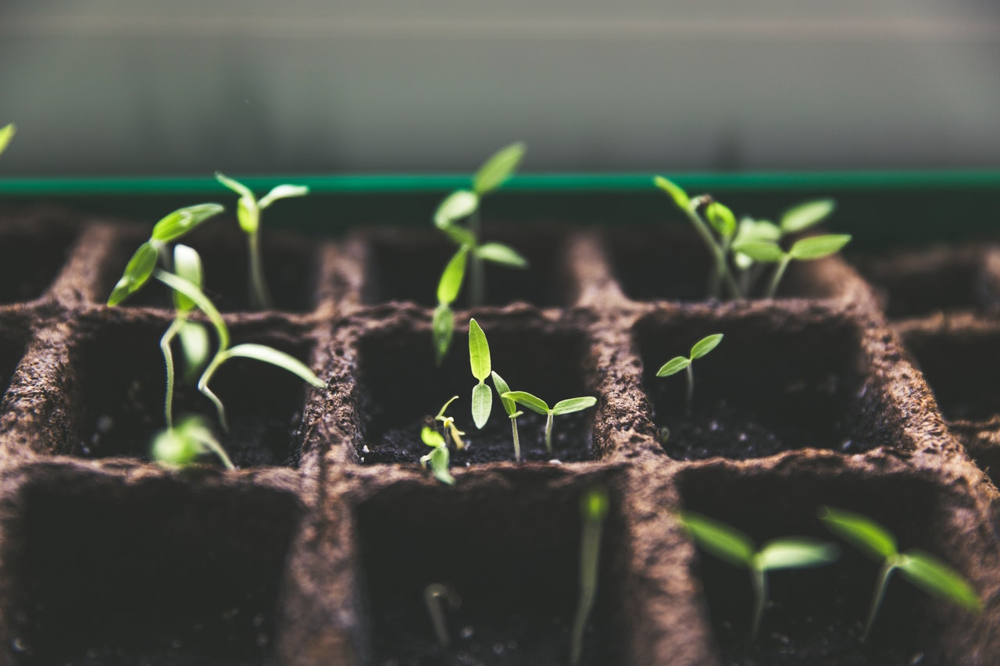
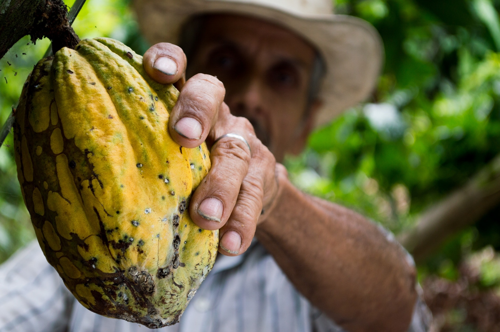

Mucho más allá del chocolate
Chocolates Valor financia directamente con la plantación del cacao en diferentes países del mundo.
Nuestra filosofía es poder ofrecer un chocolate creado a partir de una ética sostenible y permitir que sus
agricultores puedan aprovechar las plantaciones, garantizando asi la autonomía alimentaria y sus ingresos.
Beneficios ambientales
La realización de sistemas agroforestales permite tomar decisiones precisas en relación con las características y necesidades específicas de cada área del proyecto. Las especies arbóreas plantadas son nativas o respetan la biodiversidad de los diferentes territorios. La práctica agroforestal también integra la plantación de árboles en un sistema agrícola, favoreciendo la interacción virtuosa entre las diferentes especies y un uso sostenible de los recursos y la tierra. Además, durante su crecimiento todos los árboles absorben CO2, generando naturalmente un beneficio para todo el planeta.


Beneficios sociales y económicos
La realización de sistemas agroforestales permite tomar decisiones precisas en relación con las características y necesidades específicas de cada área del proyecto. Las especies arbóreas plantadas son nativas o respetan la biodiversidad de los diferentes territorios. La práctica agroforestal también integra la plantación de árboles en un sistema agrícola, favoreciendo la interacción virtuosa entre las diferentes especies y un uso sostenible de los recursos y la tierra. Además, durante su crecimiento todos los árboles absorben CO2, generando naturalmente un beneficio para todo el planeta.